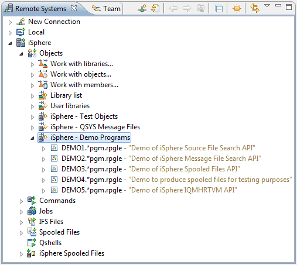

Host Object Decorator
The Host Object and i Projects Decorators add the object or member description next to an
object of the RSE tree or a i Project item. The decorators can be enabled/disabled on the
Label Decorations preference page.
The following example demonstrates how a decorated RSE tree looks like.

Optionally you can add the following information to the object decoration:
- Name of the library that contains the object.
(All objects that are not a library or a source/physical file.)
- Qualified name of the file that contains the member. (Source physical files.)
- Qualified name of the file that contains the member. (Physical data files.)